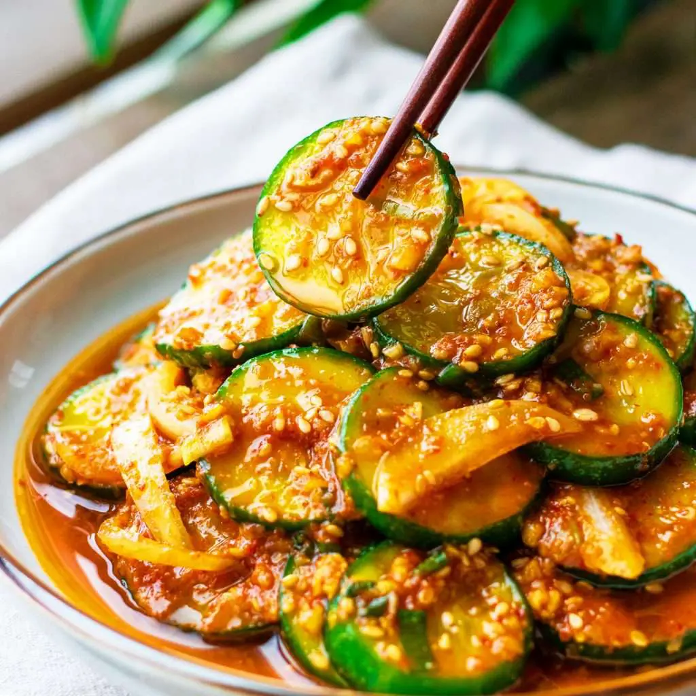

Oi Muchim (Korean Cucumber Salad)

Description
Delicious and refreshing recipe for your bonchon needs.
Quick and tasty for your convenience.
Ingredients
- Cucumbers (Any)
- Green onion
- Garlic
- Soy sauce
- Toasted sesame oil and toasted sesame seeds
- Gochugaru (Korean red pepper flakes)
- Sugar
- One large bowl or tupperware
- Rice vinegar (Optional)
Steps
- Cut cucumbers into coins
- Soak cucumbers in salt for 10-15 minutes to drain out excess moisture leaving cucumber fresh and crisp for longer
- Rinse thoroughly under cold water
- Combine the cucumber coins into a bowl/tupperware container and add the other ingredients: minced garlic, sliced green onions, gochugaru (Korean red chili flakes,
toasted sesame seeds, toasted sesami oil, little soy sauce, sugar, (rice wine vinegar optional)
- Mix or shake (tupperware) thoroughly and you're ready to enjoy!
- Adjust seasonings to taste!